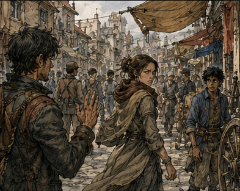
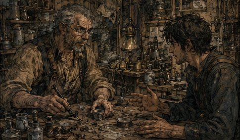
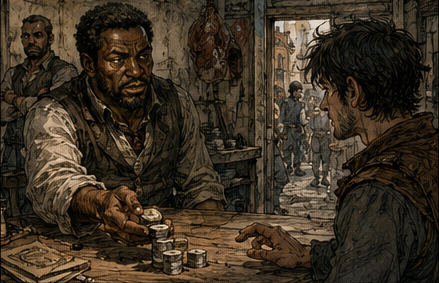
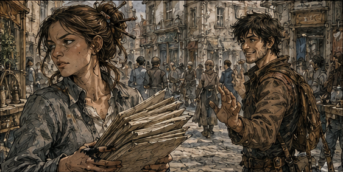

Carrow looked wrong at street level. From the window, the differences had been architectural. Down here, they had faces. I made it twelve steps before staring at a woman long enough that she checked whether something was wrong with her clothes. Nothing was. I knew the name above the shop behind her, Vella, and for several uncomfortable seconds I tried to decide whether I knew her too. Nothing.
"Sorry," I said.
"For what?" the woman asked.
"For thinking you were someone else."
"Do I look like her?" she asked.
"Not remotely."
She walked away faster. That was going to become a problem. Every person now came with questions. Who are you? Did I know you? Did you become somebody? Did you die? Did I help? Did I make it worse? Most faces gave me nothing. Forty years of life did not turn memory into a census. A guild runner named Daven caught my attention because I knew a Daven decades later. I asked for his family name. He asked why. His friend began laughing when I told him I might owe a Daven money. Three streets later I remembered the man I meant. Wrong Daven.

"Excellent," I muttered.
Forty years of memory was a warehouse after an earthquake. Useful things were in there. Finding them was the problem. So I did not go directly to the lender. First I walked. I checked the city against memory. The northern freight road was still half dirt. The Exchange did not exist. Businesses I remembered as institutions were one-room shops or empty lots. I bought paper with one of my three copper and sat across from the east market.
Walking was not wasted time anymore. It was indexing. A street corner reminded me of a riot. The riot reminded me of the guild captain who mishandled it. His name reminded me of a shipping family. The shipping family reminded me that their fortune had started somewhere boring. Most of those tangents died after two steps. A few did not.
That became the method. Let the present tug on the future until something connected strongly enough to investigate. I did not need to remember an exact winning bet. I needed one chain of cause and effect that still existed at this end of history. The lender was not the plan. He was a tool for the first step of it. Before I borrowed anything, I needed one present-day fact I could turn into a believable use for his money. Future knowledge by itself was worthless if I could not show where it touched the world now. So I walked Carrow looking for overlap: something cheap today, important later, and simple enough that I could verify it without already being rich or magical.
WHAT BECOMES VALUABLE?
That was better than asking what happened tomorrow. Tomorrow was mush. Causes were clearer. Mana-glass. Blue salt. Certain dungeon waste. Alchemical filtration. A porter dumped gray stone chips beside a masonry stall. I knew the stone. Kestrin shale. Cheap. Brittle. Mildly mana-reactive. Mostly rubbish. Years later it would be used in filtration ceramics because the property everybody hated about it was exactly what made it useful. I did not remember the date. I did not remember the inventor. I remembered the reason. That was enough to investigate.
Not enough to invest. That distinction mattered. My old self had known the finished product. Present Greg needed to prove that the material property I remembered was already there, that someone could reproduce it, and that the economics were not completely different forty years earlier. Memory gave me a lead. The city had to give me confirmation.
"How much for a cart?" I asked the stall owner. She looked at my Bronze plate. "Why?"
"Research," I said.
"You a mage?" she asked.
"No," I said.
"Artificer?" she asked.
"No," I said.
"Builder?" she asked.
"No," I said.
"What do you research?" she asked.
"Bad decisions," I said.
She laughed. "Two silver." I had two copper. Progress. The name ARWICK came back while I was walking away. Not a person at first. A maker's stamp on filter housings decades from now. Arwick Works existed already, if one rented room behind a cooper counted as works. Pell Arwick repaired lamp regulators. He was not famous yet. I stared at him too long.
Pell mattered for two different reasons, and I needed to keep them separate. The future gave me his surname. The present gave me an artificer with a workshop, tools, and enough technical knowledge to tell me whether my memory was nonsense. I did not know if Pell himself became the Arwick I remembered, if a child inherited the work, or if somebody bought the name later. For now, he was not a future industrial dynasty. He was the man who could test the first idea on my list.
That should have been simple. It was not. The future version of a name carried weight, and weight distorted judgment. I could feel myself wanting Pell to be important because that would make my memory cleaner. Cleaner memories were easier to monetize. Easier to control. That was exactly the kind of reasoning I needed to notice before it became a decision.
"Can I help you?" Pell asked.
Maybe you make a fortune. Maybe your son does. Maybe I am remembering the wrong Arwick entirely.
"Do you work with mana-reactive ceramics?" I asked.
His annoyance became interest when I explained the shale. Not the future. The present properties. Powder. Heat. Trace mana. Binding residue.
"That would contaminate the batch," Pell said.
"Unless the contamination binds preferentially," I said.
He put down his tool. There. Not proof. Evidence. A test would cost six silver. I had two copper. Now I went to Antonius Vale. I remembered the man he became much better than the man he was now. I even went to the wrong building first. Eventually a narrow man with a scar led me into a gambling room, and Antonius came out to meet me. I knew him immediately. Younger. Leaner. Black hair instead of silver at the temples. Cheap coat by his later standards. The eyes were the same.

That failure was exactly why Antonius came next. I had found something plausible and someone capable of testing it, but I could not afford the test. Antonius was not yet the financial predator I remembered from later life. Right now he was simply a lender with criminal edges and enough appetite for risk that a strange young adventurer might get through the door. I needed his silver, not his friendship. Ideally I would repay him before he had time to decide I was more valuable than the debt.
The sequence was now clean enough to say out loud: prove one remembered advantage; use the proof to borrow; use the borrowed money to turn the advantage into real capital; use the capital to accelerate magic. Every step depended on the one before it. That was good. It also meant one false memory could poison the whole chain.
I considered abandoning the shale and finding a safer idea. Then I considered how long 'safer' would take. The thought lasted perhaps three seconds. Old habits again. I was already trading certainty for speed.
"Have we met?" Antonius asked.
"No," I said.
"You are staring."
"I'm adjusting."
"To what?"
"Your age." He smiled. "How old did you expect me to be?"
"Richer."
That got me inside. His office was a storage room with a ham hanging from the ceiling. Future Antonius had owned rooms designed to make nobles feel poor. I had to work very hard not to enjoy this.
"What do you want?" he asked.
"A loan," I said.
"How much?" Antonius asked. I named the offensive number. The man with the scar laughed. Antonius looked at my Bronze plate. "Collateral?"
"No," I said.
"Property?" he asked.
"No," I said.
"Guarantor?" Antonius continued.
"No," I said.
"Family?" he asked.
"Dead," I said.
"Useful friends?" Antonius asked.
"Not yet," I said.
"What do you have?" Antonius asked.
"Information," I said. I gave him the Kestrin argument. Present facts only. Guild salvage price. Material properties. Arwick's willingness to test it. What the test would cost.
"You're asking for twenty times that," Antonius said.
"Yes," I said.
"Why?" Pell asked.
"Because if it works, I don't want to come back tomorrow."
His man laughed again. Antonius did not. "How does a nineteen-year-old Bronze know this?"
"If I had an answer you'd believe, I wouldn't need your money." He denied the large loan. Of course he did. Old Greg's reputation did not exist. Charisma was not collateral. So I changed roles.
"Smaller loan," I said. "Enough for the shale, the test, food, and guild fees. I repay principal plus twenty percent in ten days."
"Forty."
"Twenty-five."
"Forty."
"Thirty, and if I fail, I work contracts through you until the balance is cleared."
His expression changed. There it was. Me. A Bronze adventurer was cheap. A Bronze adventurer volunteering his future labor while talking like a merchant was interesting.
"Thirty-five," Antonius said. "Eight days."
"Nine."
"Eight."
"Fine." He counted silver onto the desk. I should have felt relief. Instead I felt acceleration. I knew that feeling. Hubris putting on its boots.
"If you run," Antonius said, "I find you."
"I know," I said.
His hand stopped. Too fast.
"How?"
Shit. I let some uncertainty into my face. Nineteen-year-old uncertainty. A boy pretending he had more control than he did.
"I asked around."
I had changed roles without deciding to. That was the interesting part. Confident expert to nervous boy because nervous boy was safer, and the transition had happened before I consciously chose it. Voice slightly smaller. Shoulders less certain. Let Antonius feel older, sharper, more in control. Give him the version of Greg that made his next decision easiest. Useful. Also, perhaps, something I should examine later. Antonius pushed the coins toward me. "Eight days, Greg." I picked them up.

"You're going to remember me."
"I remember everyone who owes me money."
"No. I mean later."
His eyes narrowed. I should have stopped. Apparently being nineteen again had restored my need for an audience too. I grinned. "Eight days." Outside, I nearly walked into a young guild clerk carrying forms.
"Watch it."
"Sorry."
Ink on two fingers. Gray uniform. Irritated voice. Something caught.
"Sella?"
She stopped. "Do I know you?" I knew her future immediately. Not every detail, but the shape. Years from now she would run half the guild hall through force of personality and a filing system nobody else understood. Today she was twenty-two and looking at me like I collected teeth.
"No," I said.
"Then how do you know my name?"
Her name was written on the top form. I pointed. She looked down. Then back at me.
"You were staring before that."
"You remind me of someone."
"Who?"
"You," Sella said. She stared. I smiled.
"Freak," Sella said, and walked around me.

I watched her go. Who are you now? That was harder than who do you become. I had the uncomfortable suspicion it was also more important. Then I remembered I had eight days to turn borrowed silver into enough money that Antonius Vale did not own my schedule. Reflection could wait. I went to buy garbage.
So that was the board after one day. Money: borrowed. Deadline: eight days. First investment: a cart of material most people considered rubbish. Pell: interested enough to test it, not yet mine to command, which was probably healthy. Antonius: watching. Magic: still theoretical. Reputation: nonexistent. The immediate job was simple enough to say out loud. Make the shale prove something. Turn that proof into enough money to clear Vale. Then buy myself the time to start becoming a mage six years early.